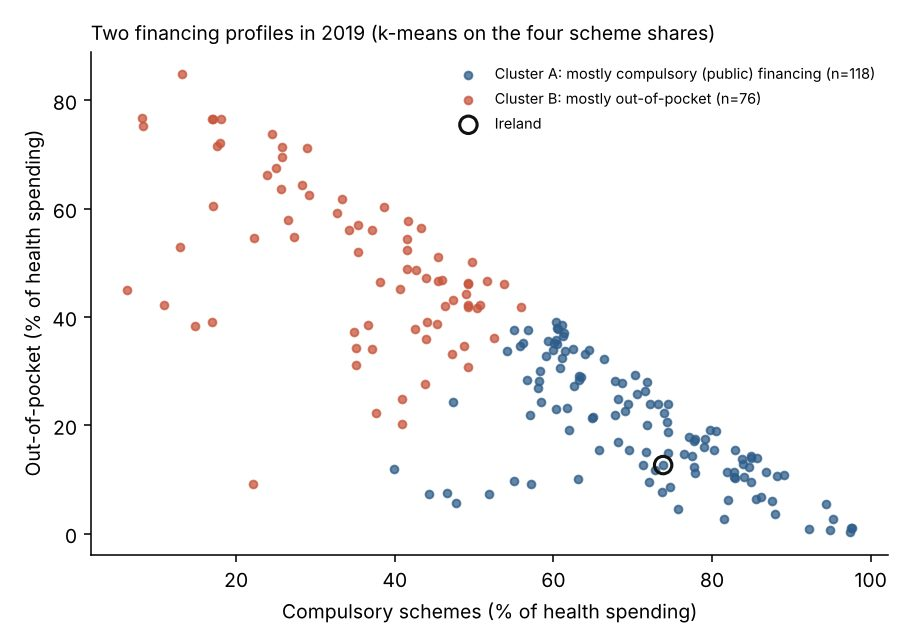
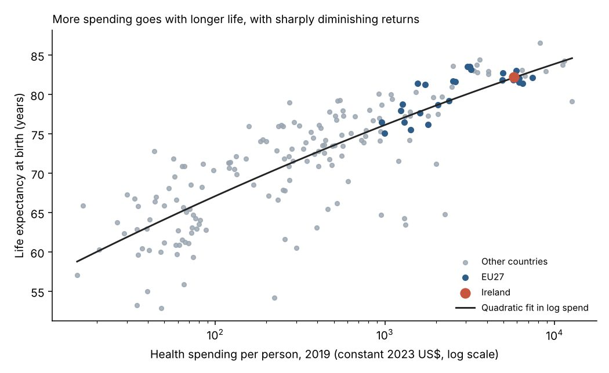
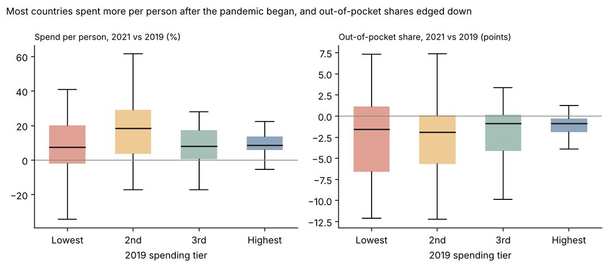

Live demoSQLPythonBootstrapDashboard
Who Pays for Health Care?
Financing patterns in 195 countries, 2000 to 2023. SQL-first pipeline over WHO and World Bank data with bootstrap intervals, clustering and an Ireland vs EU27 view.
195countries, 2000 to 2023
-0.84OOP share vs compulsory financing
+10.5%median spend 2021 vs 2019
56countries paying 40%+ out of pocket
Question
Who pays for health care?
How does the financing mix differ by spending level, what changed after the pandemic, and how strongly is spending linked to life expectancy?
- Out-of-pocket share falls as compulsory financing rises (Spearman rho -0.84, bootstrap CI -0.89 to -0.77).
- 56 of 191 countries still paid 40% or more out of pocket in 2023.
- Countries split into a mostly compulsory group and a mostly out-of-pocket group, with high bootstrap stability.
- Ireland: second highest spend per person in the EU27, with a lower out-of-pocket share than the EU median.
Live dashboard
Explore every country
The interactive dashboard shows each country's financing mix over time and where it sits against its spending tier.
Built as a SQL-first pipeline with conditional-aggregation pivots and window functions, data validation tests, nonparametric statistics with bootstrap intervals, regression and k-means with stability checks.
Figures
From the analysis
Select a figure to enlarge it.



